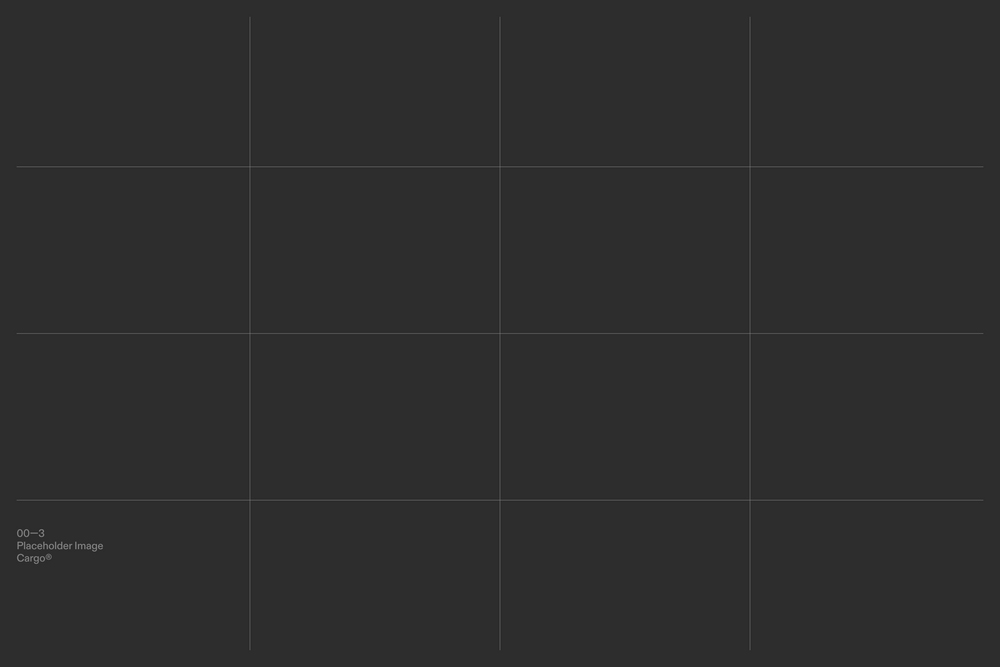
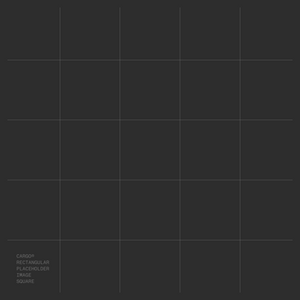

NSX
Digital
Creative
Studio
Project 01
Dar Jacir for Art and Research
Ut ornare arcu eros, at condimentum enim imperdiet vitae. Morbi lorem augue, commodo vel ipsum ac, sollicitudin placerat urna. Praesent sit amet mauris tortor. Duis ac risus sem. Fusce at elementum justo, ac mollis turpis. Pellentesque accumsan purus ut tristique bibendum. Nam feugiat sit amet enim in vehicula.
Praesent bibendum a elit non efficitur. Etiam et velit vitae quam aliquet fermentum. Quisque sit amet nulla dictum, cursus erat a, tempus est. Sed laoreet, magna eget mattis tincidunt, felis tellus vestibulum augue, in lobortis mauris risus eu nunc.

Project 02
Type 0-24-DK
Ut ornare arcu eros, at condimentum enim imperdiet vitae. Morbi lorem augue, commodo vel ipsum ac, sollicitudin placerat urna. Praesent sit amet mauris tortor. Duis ac risus sem. Fusce at elementum justo, ac mollis turpis. Pellentesque accumsan purus ut tristique bibendum. Nam feugiat sit amet enim in vehicula.
Praesent bibendum a elit non efficitur. Etiam et velit vitae quam aliquet fermentum. Quisque sit amet nulla dictum, cursus erat a, tempus est. Sed laoreet, magna eget mattis tincidunt, felis tellus vestibulum augue, in lobortis mauris risus eu nunc.



Project 03
Type 0-24-DK
Ut ornare arcu eros, at condimentum enim imperdiet vitae. Morbi lorem augue, commodo vel ipsum ac, sollicitudin placerat urna. Praesent sit amet mauris tortor. Duis ac risus sem. Fusce at elementum justo, ac mollis turpis. Pellentesque accumsan purus ut tristique bibendum. Nam feugiat sit amet enim in vehicula.
Praesent bibendum a elit non efficitur. Etiam et velit vitae quam aliquet fermentum. Quisque sit amet nulla dictum, cursus erat a, tempus est. Sed laoreet, magna eget mattis tincidunt, felis tellus vestibulum augue, in lobortis mauris risus eu nunc.
Creative Dept
Services
We Build BoldBrand Presence Through
Creative Innovation
- Graphic Design
- Art Direction
- Film making
- 3D Design
- Motion Graphics
- Content Creation
- Web Design
Point
Euro tincidunt tortor aliquam nulla facilisi cras fermentum odio eu. Lectus quam id leo in vitae turpis massa. Cursus euismod quis viverra nibh cras. Nunc scelerisque viverra mauris in aliquam sem fringilla ut. Felis imperdiet proin fermentum leo vel orci porta. Purus in mollis nunc sed id. Scelerisque varius morbi enim nunc. Semper auctor neque vitae tempus quam pellentesque nec. Feugiat vivamus at augue eget. Urna id volutpat lacus laoreet non curabitur gravida. Habitant morbi tristique senectus et netus. Eget dolor morbi non arcu.
Fames ac turpis egestas integer eget aliquet nibh praesent tristique. Quis hendrerit dolor magna eget. Nec sagittis aliquam malesuada bibendum arcu. Nibh ipsum consequat nisl vel pretium. Euro tincidunt tortor aliquam nulla facilisi cras fermentum odio eu. Lectus quam id leo in vitae turpis massa. Urna id volutpat lacus laoreet non curabitur gravida. Habitant morbi tristique senectus et netus. Eget dolor morbi non arcu.
Line
Euro tincidunt tortor aliquam nulla facilisi cras fermentum odio eu. Lectus quam id leo in vitae turpis massa. Cursus euismod quis viverra nibh cras. Nunc scelerisque viverra mauris in aliquam sem fringilla ut. Felis imperdiet proin fermentum leo vel orci porta. Purus in mollis nunc sed id. Scelerisque varius morbi enim nunc. Semper auctor neque vitae tempus quam pellentesque nec. Feugiat vivamus at augue eget. Urna id volutpat lacus laoreet non curabitur gravida. Habitant morbi tristique senectus et netus. Eget dolor morbi non arcu.
Fames ac turpis egestas integer eget aliquet nibh praesent tristique. Quis hendrerit dolor magna eget. Nec sagittis aliquam malesuada bibendum arcu. Nibh ipsum consequat nisl vel pretium. Euro tincidunt tortor aliquam nulla facilisi cras fermentum odio eu. Lectus quam id leo in vitae turpis massa. Urna id volutpat lacus laoreet non curabitur gravida. Habitant morbi tristique senectus et netus. Eget dolor morbi non arcu.